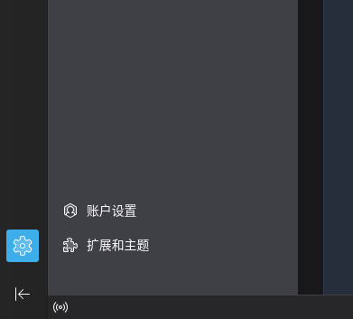
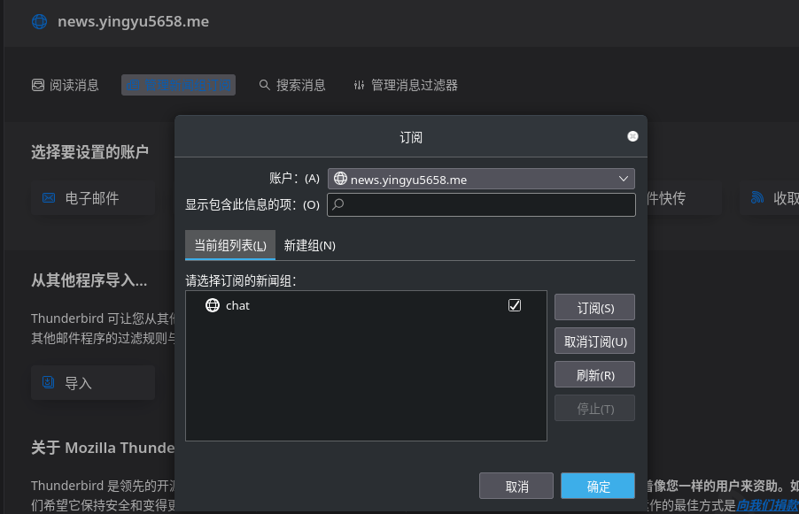
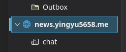
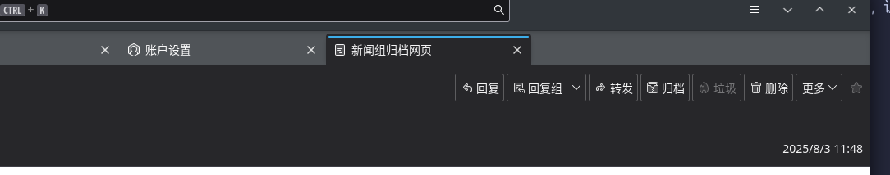

新闻组简介
新闻组（Usenet） 是互联网早期最重要、最具影响力的分布式讨论系统之一，可以把它理解为现代网络论坛（BBS）、社交媒体群组或Reddit版块的前身。它的核心特点是去中心化，提供一个平台，让用户可以在不同的主题分类（新闻组） 中发表文章（类似于帖子）。
订阅
如果有Emacs使用经验，可以用Gnus，本文使用Thunderbird。
运行Thunderbird，点击左下角的齿轮。

点击账户设置。

点击上方的账户操作，选择新建新闻组账户。

填入昵称、邮箱等基本信息。
在下一个服务器地址页面填入news.yingyu5658.me，点击确定。回到最左边的标签页。

找到刚刚输入的服务器，选择顶部第二个“管理新闻组订阅”选项。

选好要订阅的组，点击右边一栏的订阅，确定。
在最左边的列表中，右键刚刚填入的服务器，点击收取邮件，每次想要阅读消息时就收取一次邮件。

如果有想参与讨论的话题，点进那个邮件，选择回复组即可。
